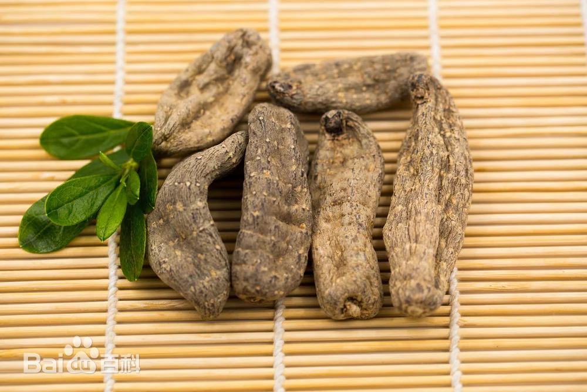
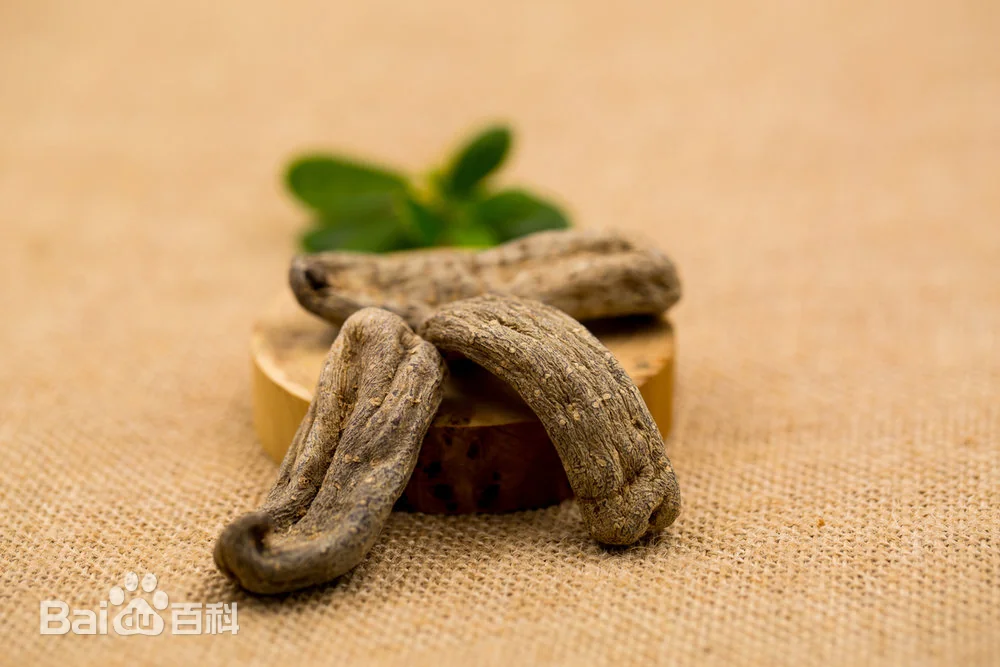
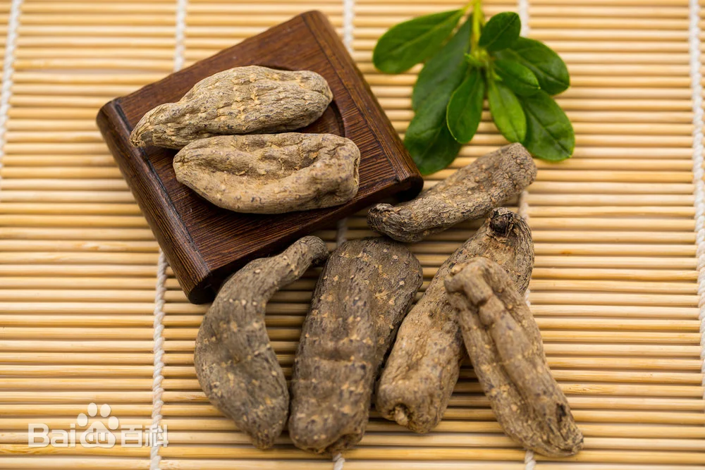
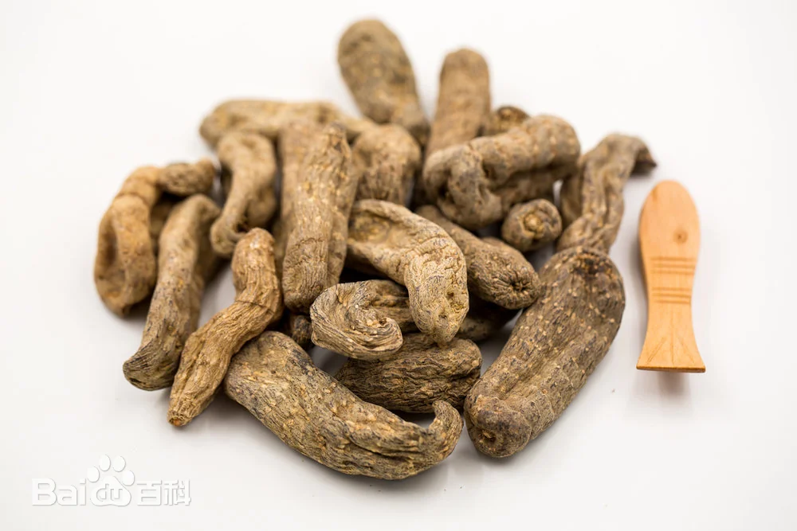
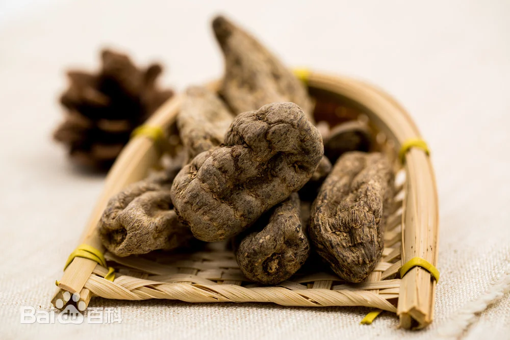
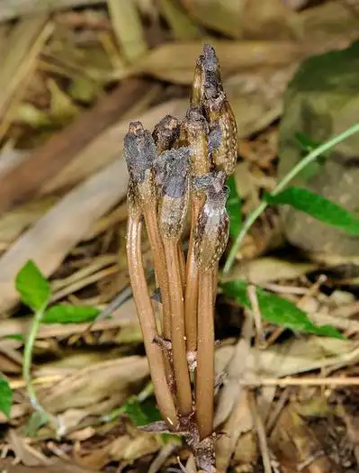
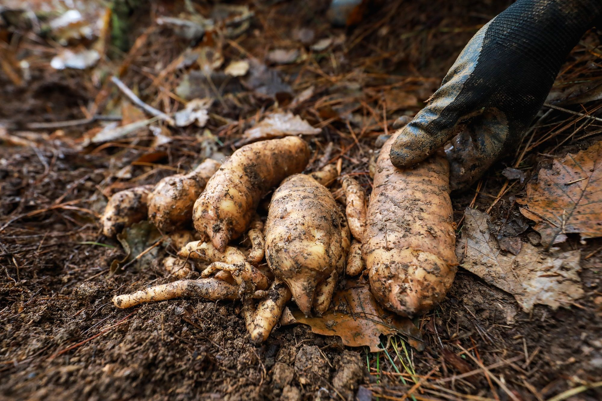
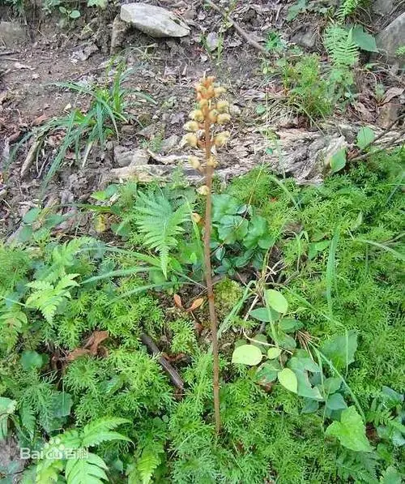

二级保护植物: 野生天麻
野生天麻在生物学上属于兰科多年生草本植物, 无毒, 性温味辛、具有抗风湿、镇痛、补虚等医学作用, 可以用于治疗破伤风、神经衰弱、头痛眩晕等病症。天麻作为名贵中药材, 在中国医药行业需求巨大，野生天麻是一种稀有名贵的药用植物。2021年9月7日，国家林业和草原局农业农村部将野生天麻被列入国家重点保护植物行列。
野生天麻保护知识
保护级别
2004年天麻被世界自然保护联盟（IUCN）评为易危物种。2013版濒危动植物种国际贸易公约（CITES）附录中，天麻列为II级物种。2021年《国家重点保护野生植物名录》，将天麻列为国家二级重点保护野生植物。
种群现状
20世纪60年代以前，天麻主要来源于野生资源，长期供应不足。随着资源的开发和生态环境的恶化以及天麻使用量和需求量不断提高，野生天麻资源日益减少甚至枯竭。自20世纪80年代初期天麻人工栽培获得成功， 人工栽培天麻完全代替野生天麻成为人药来源。
濒危因素
野生天麻的生存完全依赖于森林中蜜环菌的存在，独特的生存机制使原本丰富的天麻种质资源处于濒危状态 。
保护措施
一是选择保护区域。选择生态环境好，适合野生天麻生长，从未种植过天麻，远离人们居住场所的区域。 二是划定保护界限。按照选择的最适宜区域，确定适度的保护规模，一般应保持2000亩以上，实行定点定界，划定保护范围。 三是建立防护栏。按照保护范围界线，建立永久性防护栏有效防止家养牲畜、野生动物和人为的侵害和破坏
2004年天麻被世界自然保护联盟（IUCN）评为易危物种。2013版濒危动植物种国际贸易公约（CITES）附录中，天麻列为II级物种。2021年《国家重点保护野生植物名录》，将天麻列为国家二级重点保护野生植物。
种群现状
20世纪60年代以前，天麻主要来源于野生资源，长期供应不足。随着资源的开发和生态环境的恶化以及天麻使用量和需求量不断提高，野生天麻资源日益减少甚至枯竭。自20世纪80年代初期天麻人工栽培获得成功， 人工栽培天麻完全代替野生天麻成为人药来源。
濒危因素
野生天麻的生存完全依赖于森林中蜜环菌的存在，独特的生存机制使原本丰富的天麻种质资源处于濒危状态 。
保护措施
一是选择保护区域。选择生态环境好，适合野生天麻生长，从未种植过天麻，远离人们居住场所的区域。 二是划定保护界限。按照选择的最适宜区域，确定适度的保护规模，一般应保持2000亩以上，实行定点定界，划定保护范围。 三是建立防护栏。按照保护范围界线，建立永久性防护栏有效防止家养牲畜、野生动物和人为的侵害和破坏





1300+
野生兰科植物种类
78%
栖息地减少比例
56
保护区数量
10万+
年查获非法交易
实施案例
案例分析：警方抓获非法采挖嫌疑人
2022年6月宣恩县公安局接到群众举报，长潭河乡有人违法挖取并贩卖国家重点保护植物——野生天麻，长潭河派出所民警根据线索迅速抓获2名违法犯罪嫌疑人，2人供述已在山林中采挖了9斤野生天麻，全部卖给了药材贩子。
6月13日，民警带着2人到山里指认现场，路途上又偶遇4名背着包袋的村民，民警立即询问4人在干什么，4人表示正在挖天麻！挖取野生天麻涉嫌违法犯罪，民警当即向4人普法，并查处4人采挖的72株野生天麻。
目前，6人已被宣恩警方采取刑事强制措施
6月13日，民警带着2人到山里指认现场，路途上又偶遇4名背着包袋的村民，民警立即询问4人在干什么，4人表示正在挖天麻！挖取野生天麻涉嫌违法犯罪，民警当即向4人普法，并查处4人采挖的72株野生天麻。
目前，6人已被宣恩警方采取刑事强制措施
相关法规
根据《中华人民共和国野生植物保护条例》第二十四条规定，违法采集国家重点保护野生植物的，由野生植物行政主管部门没收所采集的野生植物和违法所得，可以并处违法所得10倍以下的罚款；没有违法所得的，可以并处1万元以下的罚款。
如何辨别野生天麻与人工天麻？



在自然环境中，野生天麻通常较小，形态各异，颜色多为黑褐色，其大小通常不及人工栽培的天麻，缺乏统一的标准麻型。
1. 药用成分及气味：野生天麻含有丰富的药用成分，如天麻甙、天麻醚甙和香草醇，这使得其具有独特且持久的香味。这种香味远非人工栽培的天麻所能比拟，即使经过长时间的干燥处理，其香味依然能够保持经久不散。
2. 外观和形态：相较于野生天麻，人工天麻大小相对均匀，呈扁圆形，外观光滑，颜色偏白且透明。人工种植的天麻形态稍大，多呈长条形。
3. 大小与形态特点：野生天麻短、呈椭圆形；人工天麻较长且薄，多呈长条形。
1. 药用成分及气味：野生天麻含有丰富的药用成分，如天麻甙、天麻醚甙和香草醇，这使得其具有独特且持久的香味。这种香味远非人工栽培的天麻所能比拟，即使经过长时间的干燥处理，其香味依然能够保持经久不散。
2. 外观和形态：相较于野生天麻，人工天麻大小相对均匀，呈扁圆形，外观光滑，颜色偏白且透明。人工种植的天麻形态稍大，多呈长条形。
3. 大小与形态特点：野生天麻短、呈椭圆形；人工天麻较长且薄，多呈长条形。